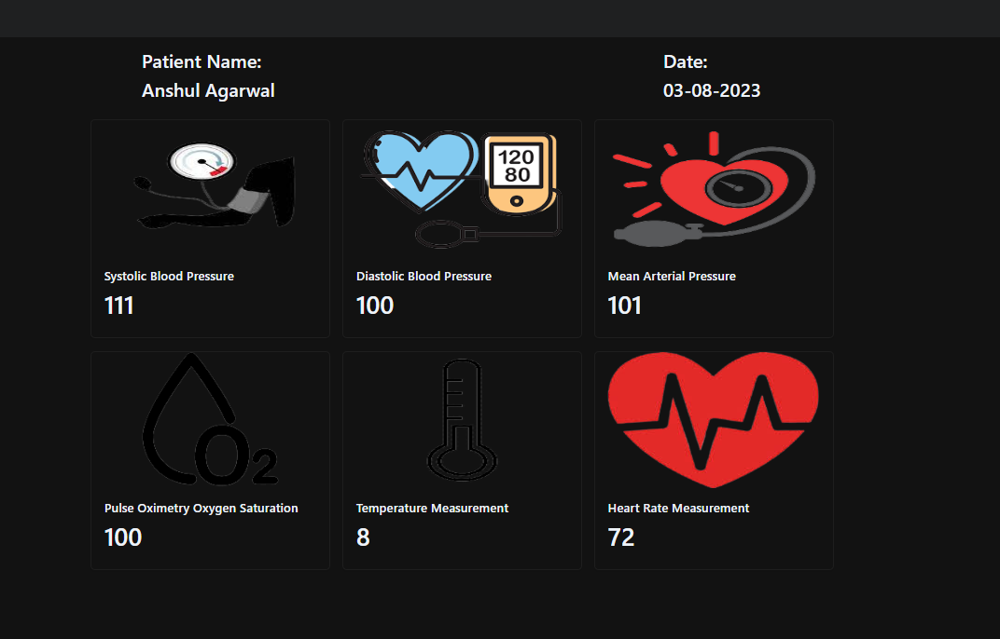

- The application is used for patients,doctors and hospitals
- Developed a real-time data transfer app enabling seamless communication between patients and doctors allowing for secure and instant transmission of vital health data from patient's gadgets to doctor's screens
- In health sector HL7 files are used for vital health data, vitals are sent to cloud after parsing using HL7 module of python.
- AWS cloud platform had been used for storage & transmission of health data to the doctors.
- The application shows the weather infromations of given location
- It shows your current location's weather information
- Some default location's data is also given
- User can watch the state of appliences from application
- User can turn on/off the lights,bulbs,fan, etc...
- Raspberry pi has been used for interfacing with app through cloud
-Created 2 server's using linux where the server's were connected using shared storage, So status of server is known to each server, even if one server goes down, it will trigger the second server, so website will be hosted from another server untill 1st server doesn't starts up perfectly.
-While working on this project, I got an exposure to Linux(Debian, CentOS distributions)
-Learned Linux Operating System and commands
- Couldn't complete the project but gained a lot of experience over Linux
- To ease the booking process for travel
- Facilitating user to make travel plans easily and convenient way
Email:harshalmistry14203@gmail.com
- I am Passionate for technologies and Business Management
- Love to work under pressurized Environment
- Continues learning new technologies in spare time
- Sports: Cricket, Kho-kho, Carrom, Pool
- I have a deep appreciation for the natural world and a strong passion for trekking